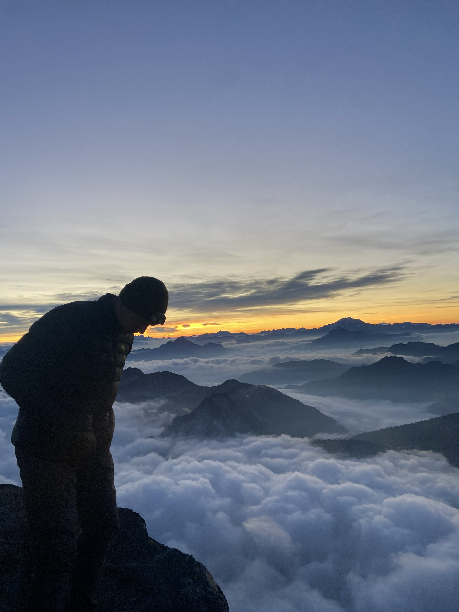

Senior ECE student at Oregon State University focused on RF systems, embedded firmware, and UAV platforms. Currently leading firmware and RF isolation design for a search-and-rescue repeater drone in collaboration with Marion County SAR. Graduating June 2026, seeking roles in defense, aerospace, and telecom.
I'm a senior ECE student at Oregon State University focused on the intersection of radio frequency design, embedded systems, and unmanned aerial platforms.
My work spans the full hardware stack — from cavity-model antenna design and link budget analysis in MATLAB and Keysight ADS, to STM32 firmware development and KiCad PCB layout. I gravitate toward problems where signal integrity, mechanical ruggedness, and real-world reliability all matter at once.
Currently leading the firmware and RF isolation design for a search-and-rescue repeater drone in collaboration with Marion County SAR. After graduation, I'm looking for roles in defense, aerospace, and telecom — places where engineering meets consequence.